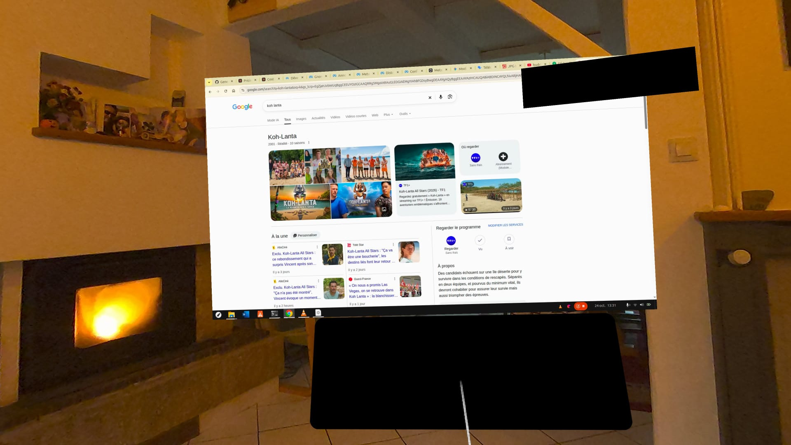
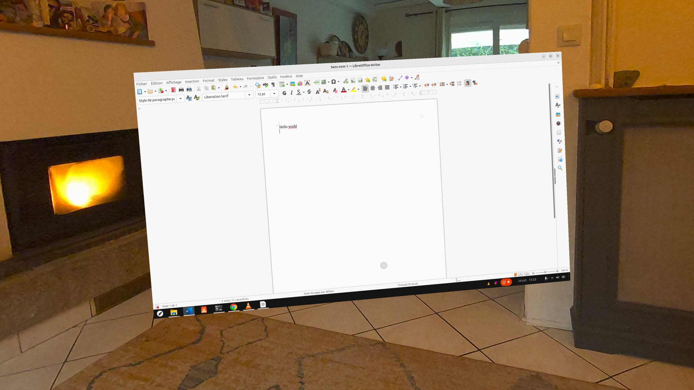
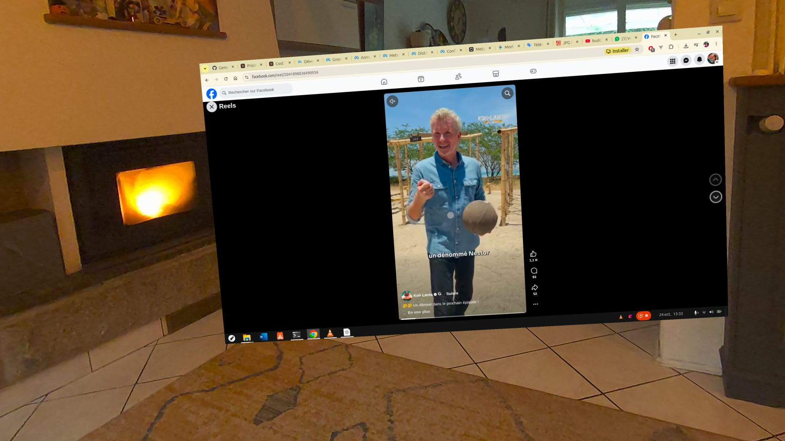
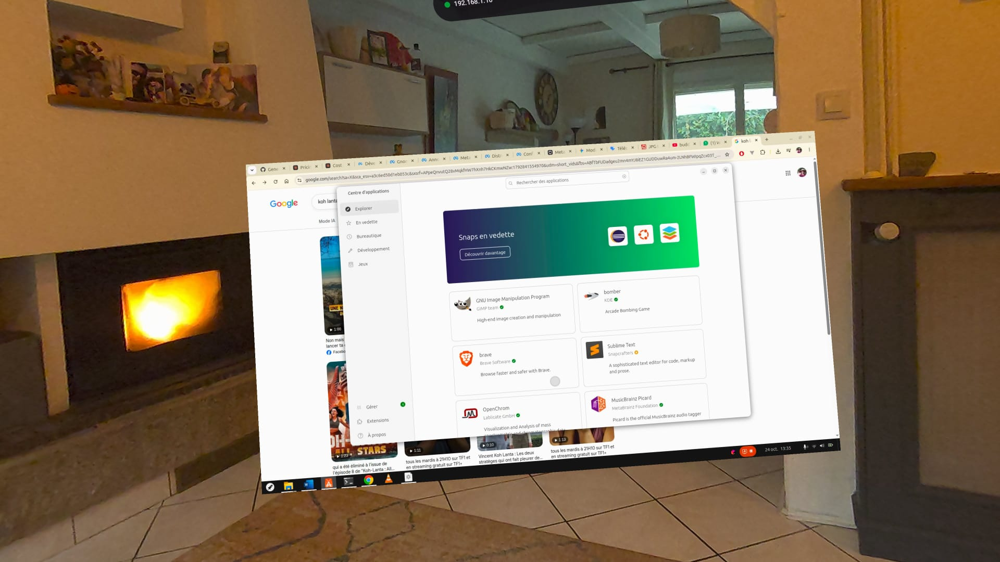
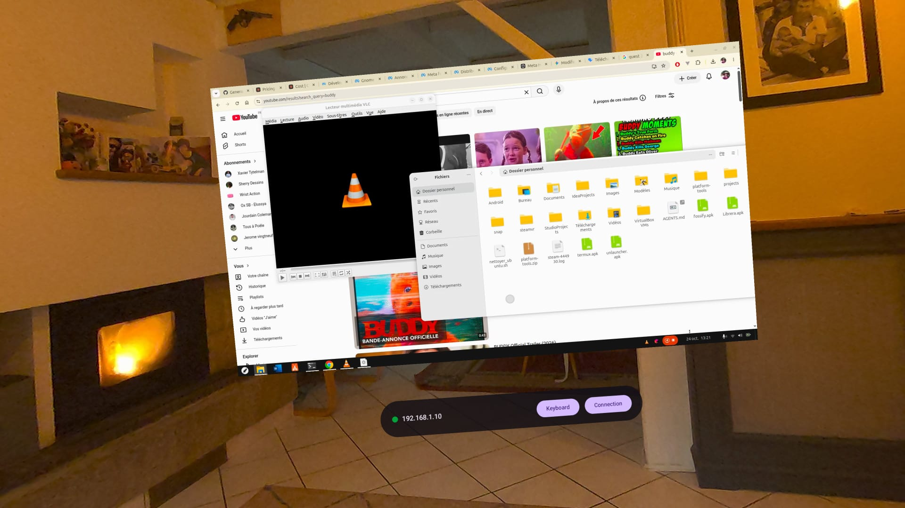

Control your Ubuntu desktop from VR with H.264 acceleration
1920×1080 display on a 2-meter floating panel with H.264 HW acceleration via Qualcomm decoder
Passthrough enabled - see your hands, keyboard, and environment around the desktop
Bluetooth keyboard, virtual keyboard with accents, hand & controller pointing
Advanced filtering and dual-hand conflict resolution for comfortable precision control
Draggable and resizable panels with persistent positioning
RDP with NLA/TLS + certificate pinning (TOFU like SSH)
Full audio support from your remote PC with PCM playback and low latency buffering
See the app in action on Meta Quest 3:




